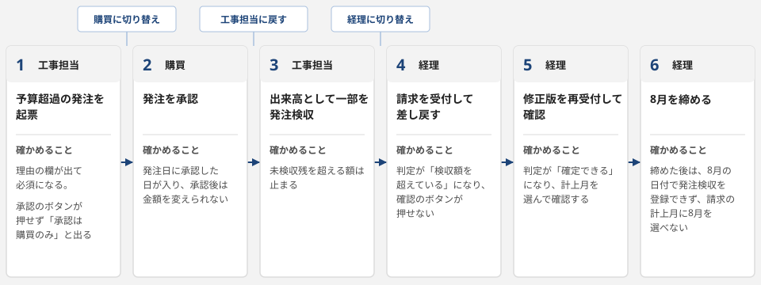

- 会社名
- 青嶺設備工業株式会社（架空）
- 基準日
- 2026-09-08
- 役割
- 営業、工事担当、購買、経理の4つ
- 画面
- 8枚
- 工事
- 15件
設備工事の会社で、工事ごとの発注、発注検収、請求の確認、労務費の計上、月次の締めを扱う業務画面と、その設計の文書です。会社名、工事名、取引先名は全て架空です。
見る順番
- 業務画面を経理として開く
工事15件の一覧が開き、メニューから請求の確認や月次の締めへ移れます。
- 例外の場面から1つを開く
予算の超過や二重の請求を画面がどう止め、誰がどう直すかを、1画面で確かめられます。
- 画面の一覧と遷移を開く
8画面の役割と行き来、役割ごとの権限、状態の変わり方を1つの文書にまとめています。
- 断り3行を読む
自主制作であることと、実在する企業の業務、データ、資料を使っていないことを書いています。
時間があれば、続けて操作の流れを試してください。
操作の流れ


流れを確かめる工事は 26-011 空調機更新（2・3階）で、費目は外注費です。予算を超える発注から8月の締めまでを、役割を切り替えながら操作します。各段のリンクは、その段の役割と画面で開きます。
- 工事担当で発注の登録を開く
外注費で予算の残りを超える額を入れると、理由の欄が出て必須になります。理由を入れて起票すると、承認のボタンが押せず「承認は購買のみ」と出ます。
- 購買に切り替えて工事詳細を開く
発注の一覧から起票した発注を開き、承認します。発注日に承認した日が入り、承認後は金額を変えられなくなります。
- 工事担当に戻して発注検収の登録を開く
この発注を選び、出来高として一部の額を登録します。未検収残を超える額は止まります。
- 経理に切り替えて請求の確認を開く
この発注の請求書を、検収した額より多い額で受け付けます。判定が「検収額を超えている」になって確認のボタンが押せないので、理由を入れて差し戻します。
- 経理のまま請求の確認で修正版を受け付ける
差戻しの行から修正版を再受付すると、判定が「確定できる」になり、計上月を選んで確認します。発注の詳細の履歴で、差戻し、再受付、確認がつながって見えます。
- 月次の締めで8月を開く
止めている項目が行へのリンク付きで並ぶので、労務費を計上し、請求を判定どおりに片付けてから締めます。締めた後は、8月の日付で発注検収を登録できず、請求の計上月に8月を選べません。
途中の変更は、このブラウザのタブの中で持ち回ります。最初からやり直すときは、1段目のリンクを開きます。
例外の場面
どの場面も、画面がどう止め、どう直すかが1画面で分かる状態で開きます。場面のリンクは最初の状態で開くので、操作の流れの途中の変更は消えます。
| 場面 | 画面の止め方 | 直し方 |
|---|---|---|
| 予算を超えている工事 | 発注の起票と承認のときに超過を判定し、理由が無ければ先へ進めません。 | 工事担当が超過の理由を書いて起票し、購買が承認します。予算を直すべきときは、工事担当が予算改定を起案し、営業が承認します。 |
| 締めた月に入力しようとした | 締め済の月の日付を入れると、日付の欄の下に理由が出て登録できません。 | 入力した人が、日付を未締めの月にして登録します。締め済の月の発注検収を直すときは、当月の日付で訂正（マイナス額）を登録します。 |
| 同じ発注に請求が2本 | 判定が「二重の疑い」になり、確認のボタンが押せず理由が出ます。 | 経理が2本を請求書の現物と照らして正本を決め、正本でない方を理由を付けて取り消してから、正本を確認します。 |
| 検収していないのに請求 | 判定が「発注検収なし」になり、確認のボタンが押せず理由が出ます。 | 納品が済んでいれば工事担当か購買が発注検収を登録し、経理が確認します。済んでいなければ、経理が差し戻します。 |
設計の資料
聞き取りのメモから画面ごとの意図まで、材料が画面になるまでの順に並べています。
- 聞き取りのメモ
受発注から月末の締めまでのやり方と困っていることを、役割ごとの発言で記録しています。
- 帳票のサンプル
今の業務で使っている紙の発注書と、表計算で作る工事別の原価表です。
- 業務整理
誰がいつ何を入力して何が出るかと、資料から決められることと確認が要ることを1枚に整理しています。
- 画面の一覧と遷移
8画面の役割と行き来、役割ごとの権限、状態遷移の表です。
- 項目の定義
画面で扱う項目を、サンプルデータと同じ定義から表にしています。
- 業務画面
8画面を1ページで切り替え、役割を変えながら操作できます。
- 画面ごとの意図
画面ごとに、誰がどの業務で使うか、どこにこだわったか、採らなかった作りとその理由を書いています。
作り方
聞き取りのメモから、業務の決まりごと（予算を超える発注には理由が要る、発注検収の無い請求は確認できない、締め済の月には入力できない、など）を先に書き出し、その決まりごとを画面とサンプルデータの両方に同じ形で入れました。
サンプルデータは、発注から月次の締めまでの操作を日付の順に実行して組み立てています。出来上がったデータは、金額、状態、締めの期間、履歴の対応を決まりごとに照らして検査し、合わない所が1つでもあれば出しません。画面の判定（予算超過、二重の疑い、検収額を超えている）も、検査と同じ式で出しています。
同じ決まりごとをスプレッドシートで持つ例（Google Apps Script）も付けました。道具の詳しい説明は道具とスプレッドシート版にあります。
使った物: HTML、CSS、JavaScript、Python（サンプルデータの生成と検査、原価表の出力）、Google Apps Script（スプレッドシート版）、Claude Code